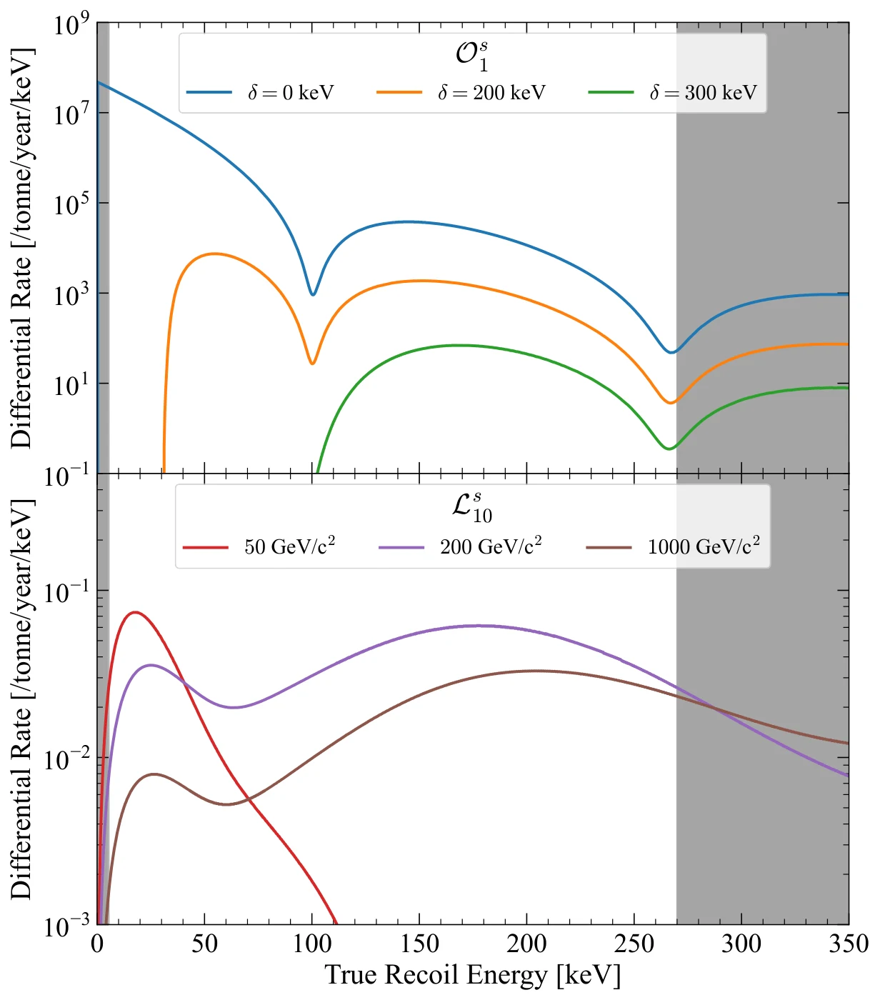
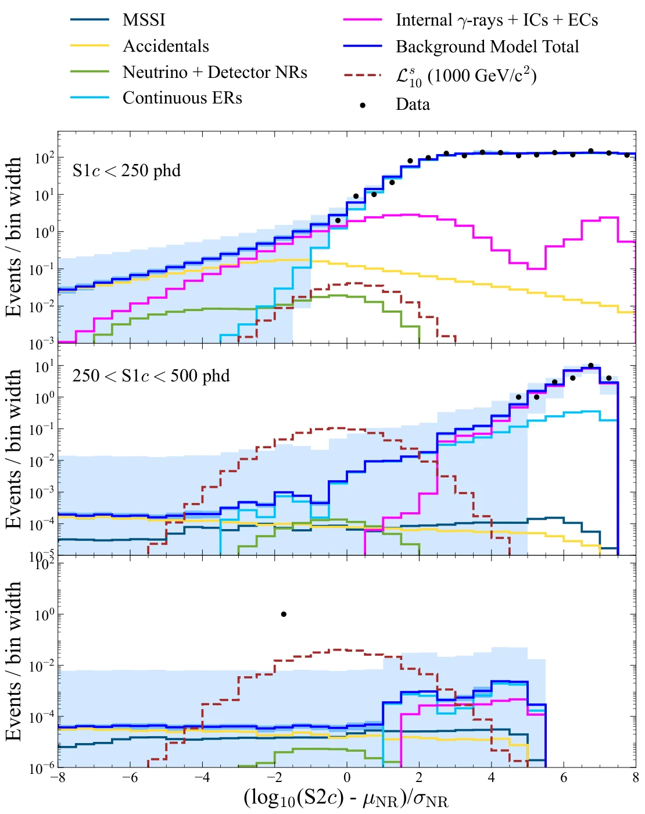

Diseño de material de estudio · W. Alexander Flórez
Física de partículas · Detección directa de materia oscura
Materia oscura hasta 270 keV
La búsqueda de LUX-ZEPLIN (LZ) en una ventana ampliada de retrocesos nucleares: teorías efectivas, un detector de xenón líquido, un evento de \(\qty{248}{keV}\) y cómo se decide si es una señal.
Basado en: LZ Collaboration, Search for dark matter particle interactions in an extended nuclear recoil energy window with the LUX-ZEPLIN (LZ) experiment (2026).
→ diapositiva siguiente · ↑↓ pasos dentro de la diapositiva · espacio todo en orden · F pantalla completa
§ 1 · Motivación
Materia oscura, WIMPs y retrocesos nucleares
Curvas de rotación de galaxias, lentes gravitacionales en cúmulos en colisión y el fondo cósmico de microondas apuntan a una materia que no emite luz y que constituye la mayor parte de la materia del universo.
Los WIMPs (partículas masivas de interacción débil) aparecen de forma natural en muchas teorías más allá del modelo estándar.
Detección directa: un WIMP del halo galáctico choca con un núcleo de xenón y lo hace retroceder. Se mide la energía de ese retroceso nuclear (NR).
Las búsquedas usuales (interacción independiente del espín, SI, o dependiente, SD) miran retrocesos \(\lesssim \qty{100}{keV}\). Si el acople depende del momento transferido \(q\), el espectro se desplaza a energías mayores. Por eso LZ amplía la ventana hasta \(\qty{270}{keV}\).
Un WIMP deja su huella como la energía de retroceso de un núcleo.
§ 1 · El resultado en una diapositiva
Lo que reporta LZ
Se prueban 616 modelos: los lagrangianos no relativistas \(\mathcal{L}_1\)–\(\mathcal{L}_{20}\) (isoescalar \(s\) e isovector \(v\)) y los operadores inelásticos \(\mathcal{O}_1\), \(\mathcal{O}_4\); tras quitar degeneraciones quedan 293 espectros distintos.
Ningún fondo raro estudiado explica el evento, pero 2,6σ global no es un descubrimiento: los límites superiores obtenidos son los más fuertes del mundo para todos los modelos probados.
Un evento solitario da 3,4σ local, pero solo 2,6σ al contar todos los modelos.
§ 2 · Teoría efectiva no relativista (NREFT)
Más allá de SI y SD: quince operadores
La interacción WIMP–nucleón se trata como un contacto de cuatro partículas:
Conservación del momento e invariancia galileana dejan cuatro cantidades hermíticas:
\(\vec q\): momento transferido; \(\mu\): masa reducida WIMP–nucleón; \(\vec v^{\perp}\): velocidad relativa perpendicular a \(\vec q\); \(\vec S\): espines.
Combinaciones lineales hasta segundo orden en \(\vec q\) dan 15 operadores \(\mathcal{O}_i\). Por ejemplo \(\mathcal{O}_1 = 1\) (SI) y \(\mathcal{O}_4 = \vec S_\chi\cdot\vec S_N\) (SD). Provienen de lagrangianos relativistas \(\mathcal{L}_1\)–\(\mathcal{L}_{20}\).
Dispersión inelástica: el WIMP pasa a un estado más pesado, con separación \(\delta\). Hace falta más energía cinética, se suprime la parte baja del espectro y la tasa se modula en el año (máximo hacia el 2 de junio).
Ejemplos del artículo: \(\mathcal{O}^{s}_{1}\) inelástico (parecido a un modelo de Higgsino) y \(\mathcal{L}^{s}_{10}\), una interacción de momento magnético con espectro ancho y de dos picos.
Si el acople crece con q, el espectro de retroceso se corre a altas energías.
§ 2 · Explorador
Espectro de retroceso: masa, \(\delta\) y dependencia en \(q\)
Con \(m_\chi = \qty{1000}{GeV}\), sube \(\delta\): el espectro pierde la parte baja y se vuelve casi plano hasta 270 keV. Los ceros vienen del factor de forma del núcleo de xenón (\(\approx 95\) y \(\approx \qty{280}{keV}\)).
\(v_{\min} = \dfrac{1}{\sqrt{2m_N E_R}}\left(\dfrac{m_N E_R}{\mu} + \delta\right)\): mínima velocidad del WIMP que puede producir \(E_R\).
δ y la dependencia en q empujan el espectro hacia la nueva ventana de energía.
§ 2 · Figura 1 del artículo
Los dos modelos ilustrativos

Arriba · \(\mathcal{O}^{s}_{1}\) inelástico, \(m_\chi = \qty{1000}{GeV/c^2}\)
\(\delta = 0\) (azul) es el caso elástico SI, que cae rápido. Con \(\delta = 200\) y \(\qty{300}{keV}\) desaparecen los retrocesos bajos: todo el espectro útil queda por encima de \(\sim\qty{50}{keV}\), justo donde la búsqueda estándar no miraba.
Abajo · \(\mathcal{L}^{s}_{10}\) elástico
Momento magnético del WIMP para 50, 200 y \(\qty{1000}{GeV/c^2}\). Las masas grandes dan un espectro ancho con un segundo máximo cerca de \(\qty{200}{keV}\).
Acoples unitarios: \(c_i^{s} = d_i^{s} = 1/m_v^{2}\), con \(m_v = \qty{246,2}{GeV}\) el valor esperado del Higgs. Espectros calculados con WimPyDD y el halo estándar.
Los modelos inelásticos y de momento magnético viven a alta energía.
§ 2 · Cinemática
¿Cuánta energía puede dejar un choque elástico?
\(m_N \approx \qty{122}{GeV/c^2}\) para \(^{131}\)Xe. La velocidad del WIMP en el sistema del laboratorio no pasa de \(\sim \qty{800}{km/s}\) (escape galáctico + movimiento de la Tierra).
El mismo cálculo para un neutrón
\(E_R^{\max} = \dfrac{4 m_n m_N}{(m_n+m_N)^2}\,E_n \approx 0{,}030\,E_n\) ⇒
Un retroceso de \(\qty{250}{keV}\) exige un neutrón de al menos \(\sim\qty{8}{MeV}\) en choque frontal; a esa energía la dispersión es muy hacia adelante y deja poca energía.
Solo WIMPs pesados o neutrones de MeV pueden dar retrocesos de 250 keV.
§ 3 · El detector
Una cámara de xenón dentro de dos vetos
TPC de doble fase: 7 t de xenón líquido activo con fotomultiplicadores (PMT) arriba y abajo. Cátodo, compuerta y ánodo crean los campos que derivan los electrones hacia la superficie y los extraen al gas.
Skin: 2 t de LXe alrededor de la TPC, leídas por centelleo. Identifica rayos \(\gamma\) que entran o salen.
Detector externo (OD): 17 t de centelleador líquido cargado con gadolinio (0,1 %) y 229 t de agua. Detecta neutrones, \(\gamma\) y muones.
Un electrodo inferior bajo el cátodo protege los PMT de abajo. Entre ambos queda la región de campo inverso (RFR), de 13,75 cm, donde la carga no llega a la superficie.
La TPC mide; Skin y OD etiquetan lo que llega de fuera.
§ 3 · Dos señales por evento
S1, S2 y la energía de un evento
S1: centelleo inmediato en el punto de interacción. S2: electroluminiscencia en el gas, cuando los electrones extraídos se aceleran. El patrón de S2 en los PMT de arriba da \((x,y)\); el retraso S1→S2 da la profundidad \(z\).
Ganancias de LZ: \(g_1 = 0{,}110 \pm 0{,}002\) phd/fotón y \(g_2 = 34{,}5 \pm 1{,}1\) phd/electrón (phd = fotones detectados). S1c y S2c están corregidas por posición.
La razón S2/S1 separa retrocesos electrónicos (ER) de \(\gamma\) y \(\beta\), de retrocesos nucleares (NR) de WIMPs, neutrones y neutrinos: un NR deja menos carga por cada fotón.
Luz y carga juntas dan la energía; su proporción dice si fue ER o NR.
§ 3 · Calibraciones
Bandas ER y NR medidas con fuentes conocidas

ER: desintegraciones \(\beta\) in situ de tritio y \(^{14}\)C (inyectados como metano) y de \(^{212}\)Pb (tras inyectar \(^{220}\)Rn).
NR: neutrones de fusión deuterio–deuterio (NR de 0–74 keV) y de reacciones (\(\alpha\),n) de AmBe (0–330 keV). AmBe es lo que permite calibrar la ventana nueva.
El simulador NEST v2.4.5 se ajusta a estas bandas y da la respuesta del detector para cada fondo y cada señal.
AmBe calibra los retrocesos nucleares hasta 330 keV.
§ 3 · Material suplementario · Modelo de respuesta
Un quiebre en la ley de potencias de la carga NR
D-D (bajo 75 keV) y AmBe (alta energía) preferían exponentes distintos. NEST v2.4.5 usa \(p = 0{,}5\) por debajo de \(E_0\) y
| Parámetro | Valor | Papel |
|---|---|---|
| \(a\) | 0,0230 | intensidad de la supresión |
| \(b\) | 0,0289 keV⁻¹ | cómo crece con la energía |
| \(E_0\) | 74,7 keV | energía del quiebre |
Para ER, las fluctuaciones de recombinación \(\sigma_p\) pasan a ser la suma de dos gaussianas asimétricas en \(x = \log_{10} N_q\): así se reproducen los anchos de la banda ER en todo el rango.
Un solo modelo NR describe ahora D-D y AmBe a la vez.
§ 4 · Selección de eventos
Región de búsqueda y volumen fiducial

| Criterio | Valor |
|---|---|
| Datos | 220 días vivos (27 mar 2023 – 1 abr 2024) |
| S1c | 3–600 phd (antes: 3–80 phd) |
| S2c | \(10^{2{,}75}\)–\(10^{4{,}15}\) phd; S2 > 645 phd |
| Masa fiducial | \(4{,}71 \pm 0{,}08\) t (14,5 % menor que antes) |
| Eficiencia NR | 96 % promedio entre 14 y 250 keV |
El borde radial del FV depende de la profundidad y del azimut: se exige \(< (1{,}0 \pm 0{,}5)\times 10^{-4}\) eventos de pared esperados y al menos 8 cm desde la pared real, para frenar los eventos MSSI.
Arriba el FV queda 12,8 cm bajo la compuerta; abajo, 9,0 cm sobre el cátodo.
Un volumen más pequeño a cambio de alejarse de paredes y cátodo.
§ 4 · Muestras y sesgo
Tres muestras según los vetos, y una «sal» fallida
Ciencia
Sin señal en ningún veto. Es donde se busca el WIMP.
Veto inmediato
Skin > 2,5 phd en \(\pm\qty{0,25}{\mu s}\) del S1, u OD > 4,5 phd en \(\pm\qty{0,3}{\mu s}\). Etiqueta \(\gamma\) y neutrones.
Veto retardado
Skin > 300 keV u OD > 200 keV hasta \(\qty{600}{\mu s}\) después (captura de neutrones). Etiqueta neutrones.
Los fondos tienen la misma forma en \(\{S1c,\ \log_{10} S2c\}\) en cada muestra pero distinta tasa; las eficiencias de etiquetado \(\lambda\) ligan las tres y restringen \(\gamma\) y neutrones. Por coincidencia aleatoria se veta el 0,01 % (inmediato) y el 2,86 % (retardado) de los eventos.
Salado: se inyectaron eventos falsos para evitar el sesgo del analista, pero su modelo NR era anterior a AmBe y no cubrió bien la región alta. Los 4 eventos de sal quedaron fuera del 90 % de la banda NR. El análisis se considera no ciego.
Los vetos no descartan eventos: los reparten en muestras que se ajustan juntas.
§ 4 · Figura 4 del artículo
1710 eventos en la muestra de ciencia

Casi todo cae en la banda ER, arriba a la izquierda: fondos \(\beta\) y \(\gamma\) de baja energía.
Un punto solitario en (540,1 phd, \(10^{3{,}98}\) phd): en plena banda NR, entre las líneas de 200 y 250 keV\(_{nr}\).
El evento bajo \(\log_{10} S2c = 3\) es compatible con una coincidencia accidental.
Los rasgos de la banda ER por encima de 25 keV\(_{ee}\) vienen de \(^{125}\)I y \(^{133}\)Xe; caen un poco bajo la banda \(\beta\) porque las cascadas Auger aumentan la recombinación.
A alta energía la banda NR está casi vacía: un solo evento destaca.
§ 5 · El evento de interés
16 de junio de 2023, 21:22:39 UTC

El reparto de S1 entre las dos matrices de PMT concuerda con la \(z\) reconstruida, y la forma de S2 con una interacción puntual a esa profundidad.
La forma del pulso S1 no permite separar ER de NR a S1c \(\sim 550\) phd: hay pocos NR de calibración cerca de 250 keV y ninguno a pocos centímetros del evento.
Parece un retroceso nuclear de 248 keV donde casi no se espera fondo.
§ 5 · Escrutinio
¿Pasó algo raro alrededor del evento?
| Antes del evento | Qué |
|---|---|
| 8 días | Calibración NR con AmBe (una de tres) |
| 25 min | Se retira una fuente de \(^{57}\)Co (γ de 122 y 136 keV, recorrido < 4 mm en LXe), del lado opuesto |
| 41 min | Último muon visto en el OD |
| 127 min | Último muon visto en la TPC |
Sin poblaciones anómalas en las calibraciones ni en los datos cercanos. La etiqueta de radón para \(^{214}\)Pb no se puede aplicar: el detector estaba en estado de flujo mixto.
Forma de onda
- Tiempo de subida: menos compatible con un MSSI de la RFR (cerca del cátodo, subidas más rápidas) que con un NR a la \(z\) reconstruida.
- S2 compatible con una plantilla de interacción en un solo sitio (desintegraciones α a la misma posición).
- Patrón de S1 en cada PMT: consistente a 2σ en \(z\) y 1σ en \((x,y)\) con ER de un solo sitio; incompatible con MSSI de RFR, pero indistinguible de un MSSI de pared.
Nada en el detector ni en la forma de onda delata un artefacto.
§ 6 · Modelo de fondo · muestra de ciencia
Eventos esperados en 220 d × 4,71 t
ER: \(\beta\) de \(^{214}\)Pb y \(^{212}\)Pb, \(^{85}\)Kr, \(^{136}\)Xe, \(^{124}\)Xe, neutrinos solares, \(\gamma\) de materiales, tritio y \(^{14}\)C residuales, \(^{125,127}\)Xe. Nuevos por la ventana amplia: \(^{83\mathrm{m}}\)Kr residual y \(^{125}\)I (vida media efectiva de 3,6 d por la purificación).
NR: neutrinos atmosféricos por CEνNS y neutrones (\(\alpha\),n) de materiales, restringidos solo por los vetos (etiquetado 92 ± 4 %).
Otros: coincidencias accidentales de S1 y S2 aislados, y eventos MSSI. Ajuste conjunto: 1713 ± 39 esperados frente a 1710 observados.
Más de mil ER, pero cerca del evento solo quedan centésimas de evento.
§ 6 · Un fondo raro
MSSI: varios centelleos, una sola ionización
Un ER deposita energía en dos sitios; uno está en una región sin colección de carga (RFR bajo el cátodo, o a pocos mm de la pared). Los S1 se suman; solo un S2 sobrevive: el evento se corre hacia la banda NR.
Con S2c = 9268 phd, la primera dispersión tendría \(12 \pm 2\) keV y S1c \(\approx 69 \pm 17\) phd. Faltan ≈ 471 phd de S1 para la segunda.
Pero dejar solo 12 keV a más de 20 cm de las fronteras exige que un \(\gamma\) atraviese \(> \qty{60}{cm}\) de LXe con un ángulo rasante sin volver a interactuar: muy improbable.
Modelo: simulación de radiactividad de materiales y \(^{214}\)Pb, con 100 % de incertidumbre en la tasa. Validación con 12 subregiones (volumen de 5,4 t y banda lateral de alta energía): \(p = 0{,}7\).
Un MSSI imitaría el evento, pero no a 26 cm del cátodo y 27 cm de la pared.
§ 6 · Los demás candidatos
Neutrones, neutrinos y coincidencias accidentales
Neutrones
- (\(\alpha\),n) de materiales: la fuente dominante; restringida por los vetos.
- Fisión espontánea: alta multiplicidad ⇒ dispersiones múltiples.
- Muones: \(2{,}1\times10^{9}\) simulados (≈ 1200 años de LZ), ningún depósito parecido. Límite al 90 %: \(< 4{,}6\times 10^{-4}\) eventos.
- Un neutrón de 250 keV de retroceso vendría con varios eventos a menor energía.
Neutrinos atmosféricos
Dispersión coherente (CEνNS) bien entendida, con espectro que decae casi exponencialmente: \(0{,}11 \pm 0{,}02\) eventos en toda la ventana.
Además, a 248 keV la energía del retroceso ya no es compatible con coherencia plena.
Accidentales
Pares aleatorios de S1 y S2 aislados; se normalizan con eventos de tiempo de deriva no físico (UDT).
Tras todos los cortes el modelo predice \(2{,}4 \pm 0{,}2\) UDT y se observan 3. Dominan a baja energía.
Cada fondo capaz de imitar el evento vendría acompañado de muchos más.
§ 7 · Estadística
Significancia local, global y «mirar a otro lado»
Razón de verosimilitud perfilada (PLR) con estadístico de dos colas; ajuste no binado de las tres muestras a la vez.
Con 293 modelos, siempre alguno se ajusta bien a una fluctuación. LZ genera datos de juguete solo con fondo, analiza cada uno con los 293 modelos y guarda el menor \(p\): así obtiene \(p_{\text{glob}}\).
3,4σ local ⇒ 2,6σ global equivale a unas 14 pruebas independientes: los modelos están muy correlacionados, porque todos «ven» el mismo evento.
Cuantos más modelos se prueban, menos sorprende una fluctuación.
§ 7 · Material suplementario · Tablas S7 y S8
¿Qué modelos «ven» el evento?
Con masas \(\lesssim \qty{50}{GeV}\) el WIMP no puede producir 248 keV (recuerda la cinemática): significancia 0.
Por encima de \(\sim\qty{100}{GeV}\) muchos modelos pasan de 3σ. El máximo, 3,4σ, aparece en \(\mathcal{L}_{10}\), \(\mathcal{L}_{16}\), \(\mathcal{O}_1^{v}\) y \(\mathcal{O}_4\) con \(\delta\) grande.
\(\mathcal{L}_1\) y \(\mathcal{L}_5\) isoescalares (SI puro, espectro muy blando) no lo ven: su espectro casi no llega a 248 keV. En los inelásticos, «–» indica que el evento no es cinemáticamente posible.
Cada celda: al menos 30 000 juguetes para obtener \(p_0\), convertido a desviaciones estándar de una cola.
El evento favorece WIMPs pesados con espectros duros.
§ 7 · Figura 6 del artículo
Intervalos al 90 %: el límite inferior se despega de cero

Se construyen intervalos de dos colas al 90 % de confianza, masa por masa (barrido «raster»). Para \(\mathcal{L}_j\) se limita el acople \(d_j\); para \(\mathcal{O}_i\), la forma adimensional \((c^{N}_i \times m_v^{2})^{2}\).
Por el evento, el límite inferior es distinto de cero para \(\delta \gtrsim \qty{100}{keV}\) y para \(m_\chi \gtrsim \qty{100}{GeV}\).
Los límites superiores mejoran los de LUX, PandaX y LZ previos: son los más estrictos del mundo para todos los modelos probados.
\(\mathcal{O}^s_1\) se puede reescribir como sección eficaz SI: \((c_1^{s} m_v^{2})^{2} = \sigma^{N}_{SI}\,\pi m_v^{4}/\mu^{2}\) (figura S7).
Un exceso sube el límite inferior, pero los superiores siguen siendo récord.
§ 7 · Conclusión
Lo que queda abierto
- LZ exploró retrocesos nucleares de 5,4 a 270 keV con 2,84 t·año, motivado por NREFT y la materia oscura inelástica.
- Un evento compatible con un NR elástico de \(248 \pm 23 \pm 23\) keV, en una región de fondo muy bajo.
- Significancia global 2,6σ; local máxima 3,4σ, típicamente para \(m_\chi > \qty{200}{GeV}\).
- Ningún fondo raro ni efecto del detector estudiado lo explica de forma convincente.
¿Y ahora? LZ sigue tomando datos con el mismo campo eléctrico desde el 1 de abril de 2024. Si es materia oscura, deberían aparecer más eventos en la misma región; si es una fluctuación, no.
Una lección de método: ampliar la ventana obliga a modelar fondos raros (MSSI, \(^{125}\)I, \(^{83\mathrm{m}}\)Kr), calibrar hasta 330 keV y corregir por el número de modelos probados.
Más exposición dirá si el evento de 248 keV fue el primero de muchos.
Práctica aciertos: 0 / 5
Comprueba lo que aprendiste
Glosario
Términos de la lección
- WIMP
- Partícula masiva de interacción débil; candidata a materia oscura con masa de GeV a TeV.
- NREFT
- Teoría efectiva no relativista: 15 operadores \(\mathcal{O}_i\) construidos con \(\vec q\), \(\vec v^{\perp}\) y los espines.
- Dispersión inelástica
- El WIMP pasa a un estado \(\delta\) más pesado; suprime los retrocesos de baja energía.
- TPC de doble fase
- Cámara de proyección temporal con xenón líquido y gaseoso que mide S1, S2 y la posición 3D.
- S1 / S2
- Centelleo inmediato / electroluminiscencia de los electrones extraídos al gas.
- ER / NR
- Retroceso electrónico (fondos \(\beta\), \(\gamma\)) / nuclear (WIMPs, neutrones, neutrinos).
- Volumen fiducial
- Región interior (4,71 t) lejos de paredes y electrodos, donde el fondo es menor.
- MSSI
- Varios centelleos y una sola ionización: parte de la energía cae donde no se recoge carga.
- RFR
- Región de campo inverso bajo el cátodo; su carga deriva hacia abajo y se pierde.
- PLR
- Razón de verosimilitud perfilada: compara la hipótesis «fondo» con «fondo + señal».
- Efecto «mirar a otro lado»
- (LEE) Corrección de la significancia por haber probado muchas hipótesis.
- Salado
- Inyección de eventos falsos en los datos para evitar el sesgo del analista.